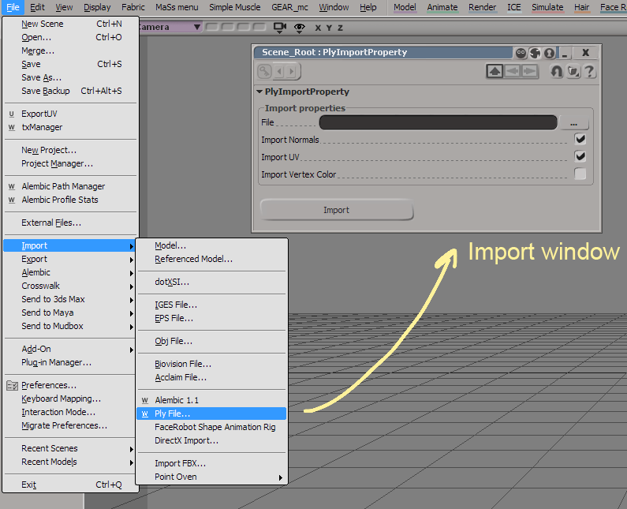
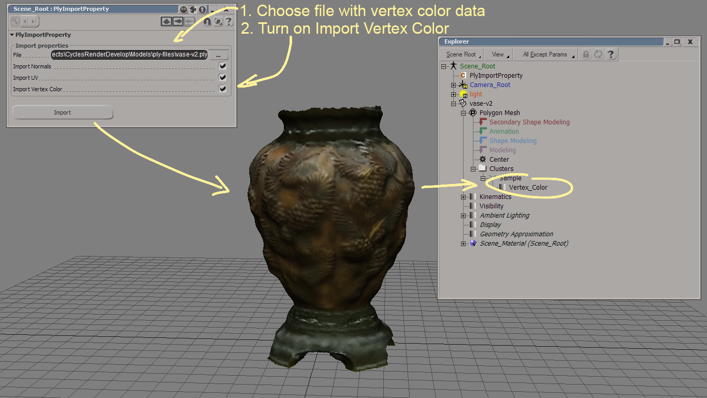

Ply importer
Last update: 15.10.2017
Description: This plugin allows you to import *.ply files into Softimage. It based on the rply library for working with ply-format. The plugin recognizes the following properties:
- vertex element:
- x, y, z as point positions
- nx, ny, nz as point normals
- s, t as uv-coordiantes
- u, v as uv-coordinates
- red, green, blue as vertex colors
- r, g ,b as vertex colors
- face element:
- vertex_indices as polygons points indeces
Download: Addon Ver. 1.1 and source of the dll-library inside the xsiaddon.
How to use: Install as usual addon for Softimage. Open import window by File - Import - Ply File...
Choose the *.ply-file, select checkboxes for importing uv-coordinates, normals and vertex colors and press Import.
Vertex color data stores on the imported object cluster.
